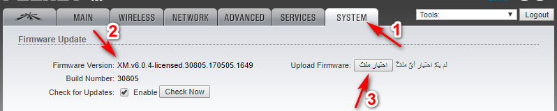
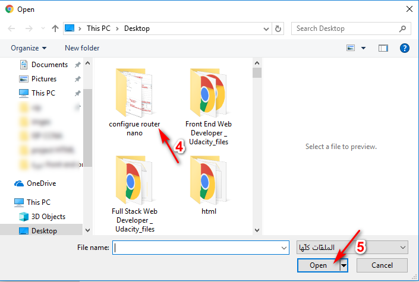
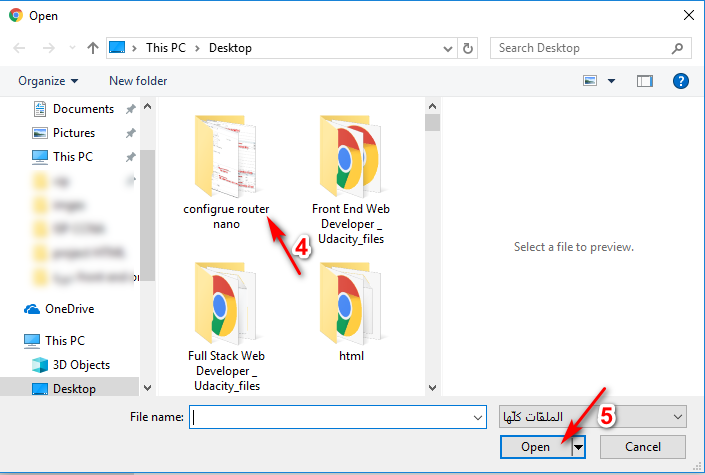

welcome with us >>>>>
how to make update
كيفية عمل التحديث لأجهزة اليوبيكتي
لغرض عمل تحديث لأي سوفت وير خاص بكل نوع من أنواع أجهزة شركة يوبكيوتي ( UBNT ) ما عليك سوى:-
- تحديد نوع الفيرجن الخاص بالجهاز هل هو (XM) أم (XW) مهم جداً تحديد نوع السوفت.
- التأكد من توفر تيار كهربائي مستمريفضل ربط النانو على (UPS) أو على العاكسة الخاصة بالمنظومة كي لا تحدث مشكلة لا قدر الله عند رفع السوفت .
- الذهاب الى تبويب SYSTEM ثم Upload Firmware: ثم أضغط على زر أختيار الملف و أذهب الى موقع حفظ الملف ثم Open ثم Upgread و أنتظر لحين رفع السوفت ... مبروك ... تمت الترقية ^_^ .


connect us
w3s
how to make update
كيفية عمل التحديث لأجهزة اليوبيكتي
لغرض عمل تحديث لأي سوفت وير خاص بكل نوع من أنواع أجهزة شركة يوبكيوتي ( UBNT ) ما عليك سوى:-
- تحديد نوع الفيرجن الخاص بالجهاز هل هو (XM) أم (XW) مهم جداً تحديد نوع السوفت.
- التأكد من توفر تيار كهربائي مستمريفضل ربط النانو على (UPS) أو على العاكسة الخاصة بالمنظومة كي لا تحدث مشكلة لا قدر الله عند رفع السوفت .
- الذهاب الى تبويب SYSTEM ثم Upload Firmware: ثم أضغط على زر أختيار الملف و أذهب الى موقع حفظ الملف ثم Open ثم Upgread و أنتظر لحين رفع السوفت ... مبروك ... تمت الترقية ^_^ .
